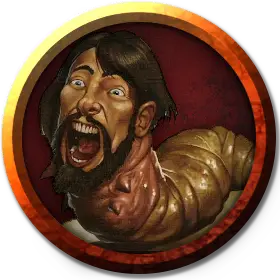

Ларва
Larva
Среднее Исчадие, нейтрально-злое

Класс Доспеха 9
Хиты 9 (2к8)
Скорость 20 футов
| мод | спас | ||
|---|---|---|---|
| СИЛ | 9 | −1 | −1 |
| ЛОВ | 9 | −1 | −1 |
| ТЕЛ | 10 | +0 | +0 |
| мод | спас | ||
|---|---|---|---|
| ИНТ | 6 | −2 | −2 |
| МДР | 10 | +0 | +0 |
| ХАР | 2 | −4 | −4 |
Чувства пассивное Восприятие 10
Языки понимает все, известные при жизни, но не говорит
Опасность 0
Бонус мастерства +2
Действия
Укус. Рукопашная атака оружием: +1 к попаданию, досягаемость 5 футов, одна цель. Попадание: 1 (1к4 - 1) колющего урона.
Описание
Ларва это жалкое исчадие, сохраняющее подобие своего прежнего лица, но с телом жирного червя. У ларвы остаются лишь призрачные воспоминания о предыдущей жизни, а все игровые параметры меняются на те, что прописаны в приведённом блоке статистики.
В Преисподних ползает множество ларв. Ночные карги, личи и ракшасы собирают их, чтобы в дальнейшем использовать в мерзких ритуалах. Другим исчадиям нравится их просто есть.